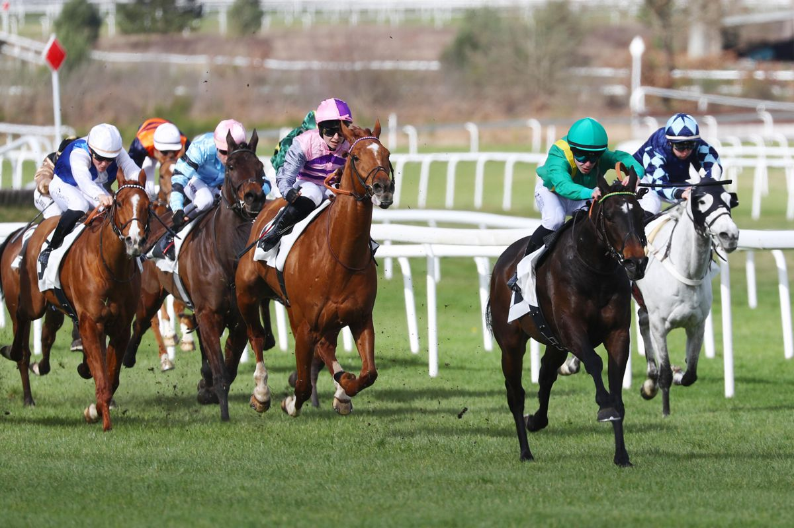

Moro debuta en el Quinté+ de Estrasburgo con el respaldo del experto Thomas Guilmin
El hipódromo alsaciano de Estrasburgo acoge este miércoles 27 de mayo el tradicional Prix de la Musique, un hándicap de 3.000 metros con 16 participantes donde Moro hará su estreno en esta categoría con aspiraciones legítimas.

Foto: paris-turf.com
El Prix de la Musique, uno de los grandes hándicaps del calendario francés disputado sobre la exigente distancia de 3.000 metros, congrega este miércoles en Estrasburgo a 16 ejemplares de cuatro años en adelante en la prueba del Quinté+ del día. Entre los favoritos destaca el debut de Moro, un ejemplar que afronta sus primeros pasos en este nivel de la competición con el respaldo explícito del experto Thomas Guilmin, quien lo sitúa al frente de su selección.
La competencia se presenta exigente en una prueba donde varios participantes llegan con credenciales contrastadas. It's Eagle, que competirá en su pista habitual, cuenta con el aval de su preparadora Yvonne Vollmer, quien reconoce que el caballo llega en plena forma y mantiene su competitividad en valor 31, si bien afronta un reto superior al disputar la primera división del hándicap tras imponerse el año pasado en la segunda. Mykiss, especialista del trazado de Estrasburgo, y Cuncerto, defensor del título de esta cita alsaciana, completan el grupo de aspirantes principales junto a Pretty Queen, que debuta en el Quinté+ tras confirmar su aptitud en este tipo de distancias. Shrihara, tercera en su última comparecencia a este nivel, A Beauregard y Askari, reciente segunda en el hándicap de ParisLongchamp, redondean las candidaturas con opciones de colarse en la combinación ganadora.
— Redacción de Galope al Día